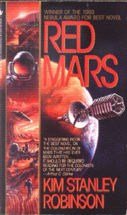

Red Marsby Kim Stanley Robinson
publisher: Bantam Spectra
Fiction, 572 pages | 
(book cover art, Copyright ©Kim Stanley Robinson)
Used with Permission. |
Return to the Book MenuPrevious|Next
Description:
An epic tale about the colonization of Mars. Starting from a voyage to the planet, to setting up a home base, to building cities and empires, this is a tale of one group of people's struggle to find a new home for themselves on a world full of danger from the environment and from each other.
Recommended for: future Martians, people who like big stories, people who like strong characters.
Did-you-read questions:
Deadline: February 1, 2005.
These should be easy questions, but you should have the questions ready and keep an eye out during your reading. Each question should be answered with 1-2 sentences.
Note: these questions are not probably not the most important part of the book! Your essay will not have to cover these questions!
- Where does Arkady spend most of his time once the group gets to Mars?
- What is Ann's problem with the typical colonization attempts on Mars?
- How did the coyote come to Mars?
- What happens to the space elevator?
- What impact does Nadia have on Phobos?
Report Questions:Deadline: Peer Review Session on February 8, 2005; paper due February 10, 2005.
You should write a 3 - 4 page essay on one of the following questions. Your essay should include examples and references to the book, unless otherwise specified. Page number references are sufficient for citing material from the primary book. If you use outside materials, cite your sources in full. If you would rather write on a different topic, you may, but clear it with Mr. Howe or Ms. Sullivan first.
- This novel has many different people, with many different, strong opinions about what the future of human colonization on Mars should be. Who do you agree with most?
- Mars was the god of war, but war seems to be a major import from earth. Based on real-life experience and examples from the book, do you think that this was inevitible?
- On the cover of the book, Arthur C. Clarke says this "should be required reading for the colonists of the next century." Suppose you are such a colonist. What lessons might you learn from this book?
- Who was the most interesting character in the book? Use examples to explain why you think this.
Graphic and Presentation:
Deadline: February 21 - March 3, 2005.You will give a 10 minute presentation on both of the following:
- Convince your peers that they should (or should not) read this book. (This may include a brief summary of the book.) Give examples of what was cool or worthwhile in the book, and what you got out of it (or didn't).
- Describe a (realistic) science idea that you learned about in this book, citing information from at least 2 external sources (other than the dictionary). If you would like help choosing or understanding an idea from your book, you are invited to come talk to Mr. Howe or Ms. Sullivan.
Note: This presentation should not be just a reading of your paper!Along with this presentation, you should have a graphic that will go with it. A Power Point presentation is recommended, but if you have a special idea for a something else, such as a model, an original video presentation, or a well done drawing/ painting/ sculpture/ etc., you may do so, provided it involves a similar level of effort and polish. Speak to Mr. Howe or Ms. Sullivan first if you are considering an alternate graphic format to the Power Point.
Return to the Book MenuPrevious|Next